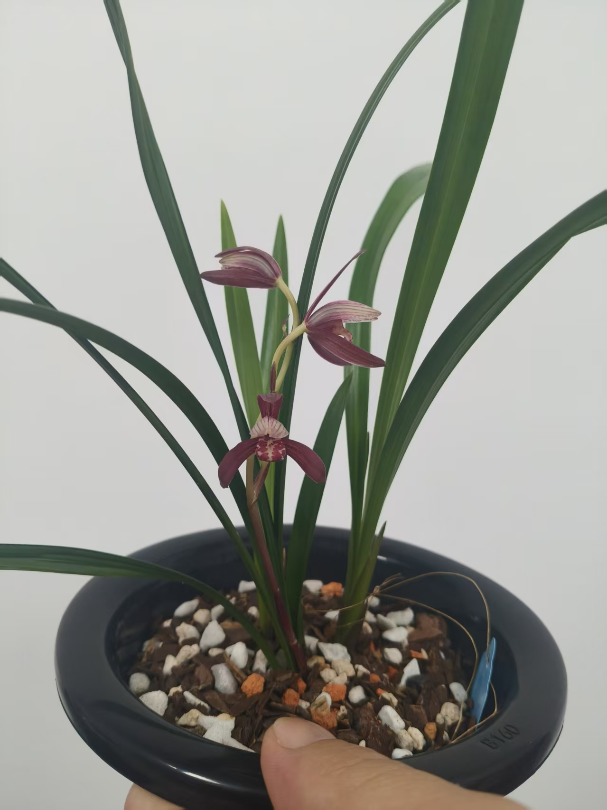
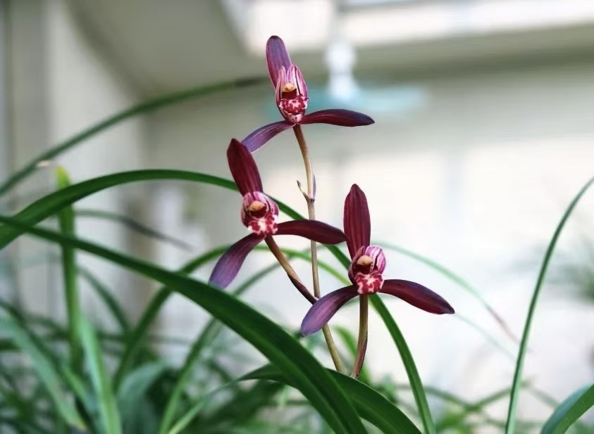
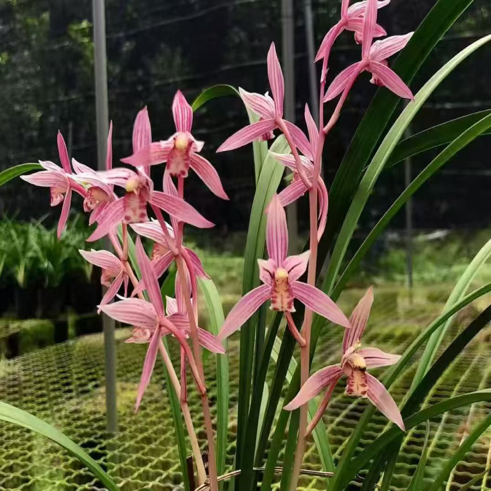

Jianlan (Cymbidium ensifolium): A Summer Orchid with Long-Lasting Beauty
Published: July 28, 2026 | Category: Orchid Species

Among the traditional Chinese cymbidiums, Jianlan stands apart. It is the summer orchid — blooming when most other Chinese orchids are resting, filling the warm months with its elegant flowers and distinctive fragrance. For growers, this makes Jianlan indispensable: it extends the orchid season and provides beauty and fragrance during the months when the garden needs it most.
Its name — Jianlan (建兰) — derives from Jianzhou, an ancient name for the region in present-day Fujian Province where this orchid has been cultivated for centuries. The scientific name Cymbidium ensifolium means "sword-leafed," a reference to the plant's most striking feature: its upright, sword-like leaves that give Jianlan a bold and distinctive presence.
Species Profile
| Common Name | Jianlan / Sword-leaf Orchid (建兰) |
| Scientific Name | Cymbidium ensifolium |
| Family | Orchidaceae |
| Native Range | Southern China, Southeast Asia |
| Bloom Season | Summer to autumn |
| Conservation Status | Widely cultivated; common in cultivation |

Appearance and Characteristics
Jianlan is immediately recognizable by its leaves. Unlike the softly arching foliage of Chunlan or the broad, erect leaves of Huilan, Jianlan's leaves are narrow, upright, and distinctly sword-shaped — hence its botanical name ensifolium, meaning "sword-leaf." The leaves grow 30–50 centimeters in length and are a rich, glossy green with a firm, leathery texture.
The flowers of Jianlan appear in summer and can continue into autumn. Each flower spike carries 3–8 flowers, and a mature plant may produce multiple spikes across the blooming season. The individual flowers are similar in form to other Chinese cymbidiums — with pale green to yellowish-green sepals and petals, and a white or pale lip marked with maroon or purple spots — but they tend to be slightly more open and star-like in shape.
What truly distinguishes Jianlan is its blooming habit. While Chunlan and Huilan bloom once per year, Jianlan can bloom multiple times over the summer months, especially when well-cared-for. This extended blooming period — combined with its warm-weather tolerance — makes it one of the most rewarding Chinese orchids for home cultivation.

Jianlan in Chinese Culture
Jianlan has been cultivated in China for over a thousand years and holds a secure place in traditional orchid culture. In the literary tradition, Jianlan is often associated with the idea of qingxin (清心) — a "pure heart" or "clear mind" — because its summer blooms bring freshness and calm to the hottest season.
During the Song Dynasty, Jianlan was a favorite of scholar-officials in southern China, who appreciated its ability to bloom through the summer heat. The poet Yang Wanli (杨万里, 1127–1206) wrote verses praising Jianlan's resilience and the cooling effect of its presence in a garden. In Chinese garden culture, placing Jianlan near a study window or in a courtyard was considered a way to invite clarity of thought and refined beauty into daily life.
Jianlan's cultural meaning is thus somewhat different from Chunlan's solitary virtue or Huilan's noble character. Jianlan represents vitality within refinement — the ability to maintain grace and beauty even under challenging conditions. It is the orchid of summer's quiet hours, a companion for long afternoons and contemplative evenings.
Fragrance and Appreciation
Jianlan's fragrance is distinct from that of Chunlan and Huilan. While still a youxiang (幽香), it has a slightly sweeter, more floral character that some describe as having hints of jasmine or gardenia beneath the classic cymbidium scent. The fragrance is strongest in the morning and evening, making Jianlan particularly rewarding to grow near a seating area where its scent can be enjoyed at leisure.
In traditional Chinese orchid appreciation, Jianlan is judged by slightly different standards than the spring-blooming cymbidiums. Because of its multiple blooming cycles, the overall condition of the plant — the health and organization of its leaves, the number and arrangement of its flower spikes — becomes more important than the perfection of any single bloom. A well-grown Jianlan is a plant that looks good even when not in flower, with clean, upright leaves arranged in a balanced fan.
Growing Jianlan at Home
Jianlan is one of the most adaptable Chinese cymbidiums and an excellent choice for beginners. Its tolerance of warmer conditions makes it more suitable for indoor growing than Chunlan or Huilan, both of which require a distinct winter chill.
- Light — Bright, indirect light. Jianlan tolerates more warmth and can handle slightly brighter conditions than other Chinese cymbidiums.
- Temperature — Warm to moderate. Grows well at 18–28°C (65–82°F). Does not require an extended cold period to bloom.
- Water — Keep evenly moist during the growing season. Reduce watering in winter but do not allow to dry out completely.
- Humidity — Appreciates higher humidity. Regular misting or a humidity tray is beneficial in dry indoor environments.
For detailed growing instructions, see How to Grow Orchids at Home and How to Water Orchids Correctly.
Jianlan Around the World
Jianlan is perhaps the most widely distributed Chinese cymbidium outside of China. Its tolerance of warm conditions makes it suitable for growing in tropical and subtropical regions where other Chinese orchids struggle. It is popular in Southeast Asia, particularly in Thailand and Vietnam, where it is grown both as a garden plant and for the cut flower trade. In Japan, it is known as shuuran and has been cultivated for centuries.
For international growers looking to begin their journey with Chinese orchids, Jianlan is often the recommended starting point. Its robust nature, long blooming season, and beautiful fragrance offer a satisfying introduction to the world of Chinese cymbidiums.
Conclusion
Jianlan brings something unique to the Chinese orchid family: the gift of summer beauty. While other orchids come and go with the seasons, Jianlan stays, producing flower spike after flower spike through the warm months. It is the orchid of long afternoons and lingering evenings, a plant that rewards patience and repays care with abundant blooms.
Explore our Chinese Orchid Species Guide for an overview of all major species, or visit Orchid Culture to discover the rich traditions behind these remarkable plants.